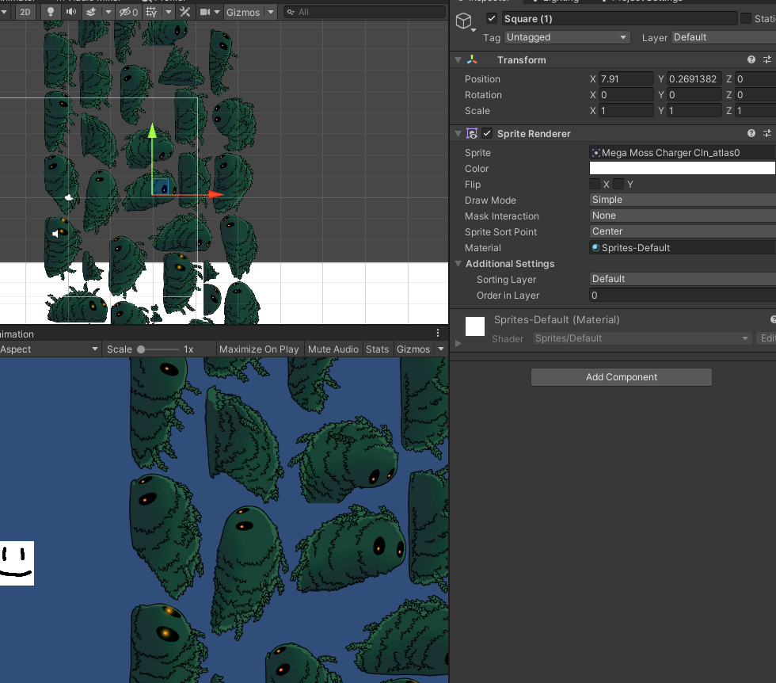
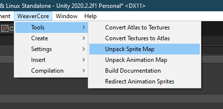
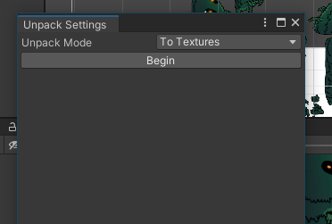
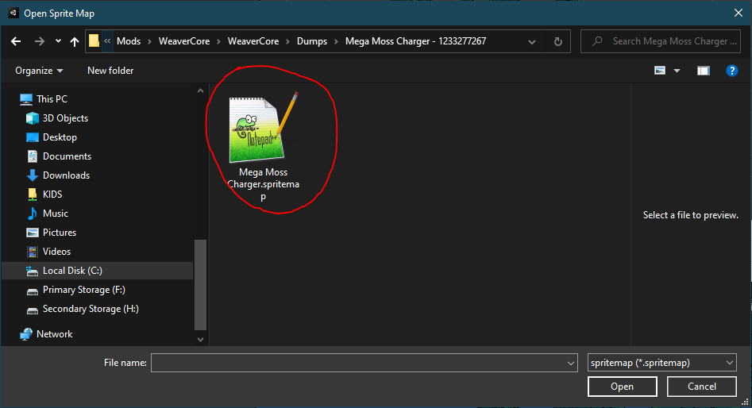
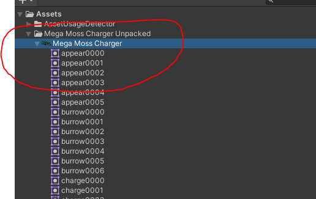
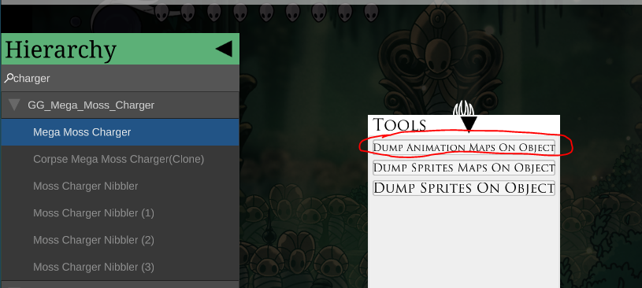
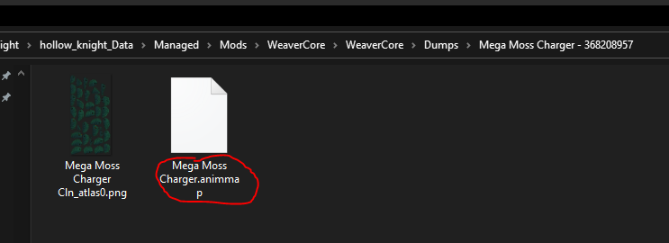
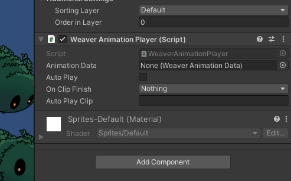
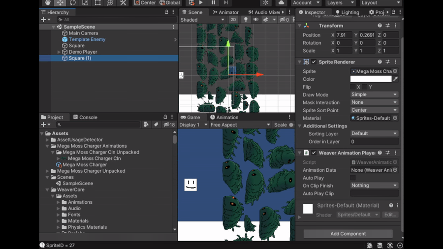

Importing Existing Sprites
In many cases, it may be useful to import existing Hollow Knight sprites into the project so you can work with them. However, it isn't as simple as adding in the spritesheets into the "Assets" folder and adding them to an object, because they will otherwise look like this:

In order to import the sprites properly, we need a way of splitting up the spritesheet into individual sprites we can work with. Luckily, WeaveCore provides a way of doing this via it's in-game Debug Tools. To get the information we need, we need to boot up Hollow Knight, go to the object we want to dump (Massive Moss Charger in this case), and find it in the WeaverCore Debug Tools:

The object we want in this case is "Mega Moss Charger". Make sure it's highlighted, and open up the "Tools" panel at the bottom of the screen. This will present us with some options we can do on the object:

The one we need is "Dump Sprites On Object". Click on it and it will proceed to dump all the sprites on the Massive Moss Charger. The dumped files will be placed into your Hollow Knight "Mods" directory. If you are using Steam on Windows, this should be located at:
C:\Program Files (x86)\Steam\steamapps\common\Hollow Knight\hollow_knight_Data\Managed\Mods
The files will be located in WeaverCore\WeaverCore\Dumps\Massive Moss Charger - [RANDOM NUMBERS]:

These are the two files we need to import the sprites into a WeaverCore Project. Now, head back into the Unity Editor, and we need to go to "WeaverCore -> Tools -> Unpack Sprite Map"

This will bring up a window where we can start unpacking the sprites.

This is where we can specify the Unpack mode, which determines how we want the sprites to get unpacked. The two modes are:
- To Textures : Will unpack all the sprites into individual files, one for each sprite
- To Sprite : Will unpack all the sprites into a single file, and the unity sprite packer will create all the sprites from this single file
You can pick whichever option will better suit your needs.
When you are ready, click on the "Begin" button, and this will bring up a file selection window. From here, we need to select the spritemap file that was dumped by WeaverCore:

Note
Make sure all the PNG files are also in the same location as the spritemap file, or else the import will fail
Once you selected the file, the import process will begin. Once it's done, it will create a folder that contains all the imported sprites that we can now use!

Importing Animations
Importing animations from existing objects is a very similar process to importing sprites.
Instead of using the "Dump Sprites On Object" tool in the Debug Tools, we instead use "Dump Animation Maps On Object":

The tool will result in an "animmap" file getting dumped along side the image file:

To import the animation data, we need to go to "WeaverCore -> Tools -> Unpack Animation Map"

From here, we follow the same steps when importing the spritemap. We specify unpack mode we want, click on "Begin", find and open the "animmap" file, and the files will get imported into the project:

But this time, we have an extra file that was imported. This new object is a Weaver Animation Data object that contains all the animation data of the Massive Moss Charger:

To use it, we need to add a Weaver Animation Data component to an object of our choice:

Then, drag the imported animation data object into the "Animation Data" slot of the player:

With the Animation Player now configured, we can play an animation clip by using the PlayAnimation function:
void Awake()
{
var player = GetComponent<WeaverAnimationPlayer>();
//Play the "Charge" animation
player.PlayAnimation("Charge");
}